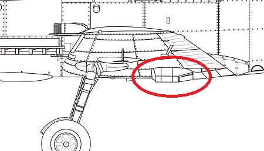
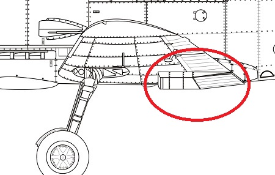
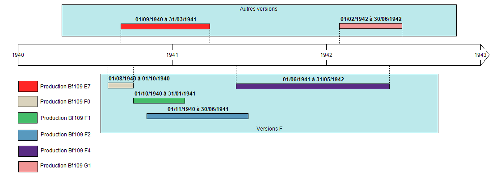

Le Messerschmitt Bf109 F
Les développements du F débutent en 1938, et les premiers plans de recherche sortent en janvier 1939 avec les versions de test des différentes modifications à apporter. Ces prototypes sont les :
- V22 (Wnr 1800, Immatriculation civile civile D-IRRQ) :
Basé sur une cellule de E1, il permet les tests d'une nouvelle prise d'air pour le compresseur. Il effectue son premier vol le 26 jan. 1939 - V23 (Wnr 1801, D-ISHN) :
Aussi basé sur une cellule de E1, il permettra le test du DB601E. - V25 (Wnr 1930, D-IVKC) :
Basé sur une cellule de E3, il permet les tests d'un radiateur d'huile annulaire derrière l'hélice, les nouvelles ailes, une nouvelle casserole d'hélice (celle du Me 209) et le circuit d'alimentation en carburant. Il finira sa carrière dans une unité école. - V24(Wnr 1929, D-ITDH puis VK+AB) :
une cellule E3, il sort quelques mois plus tard en été 40, c'est le plus proche du F définitif, malgré ses ailes héritées de la version E. Il inclue aussi la casserole du Me210, et une aile monocoque.
La version F était initialement prévue pour être équipée du moteur DB601E, mais Daimler rencontre des problèmes de conception pour finaliser le moteur, ce sera donc la version DB601N qui équipera les premières
séries de F.
Ce moteur est déjà présent dans le E4/N et E7/N. Le principal défaut de ce moteur est la consommation massive d'un carburant à fort taux d'octane (le C3) que l’Allemagne ne peut produire en grande quantité.
L'armement aussi sera changé par rapport aux versions précédentes avec la suppression des canons d'ailes, et l'installation d'un canon MG FF/M tirant dans l'axe de l'hélice.
Parmi les modifications notable différenciant le F du E, on peut noter :
- Au niveau de l'arrière de l'avion, les supports externes sont retirés, et le plan horizontal est abaissé de 4cm.
La dérive voit sa surface diminuée et ses commandes être complètement internes . - L'angle du train d'atterrissage est orienté de 4,5° vers l'avant.
- L'hélice est changée et voit son diamètre diminuer de 10 cm (passant ainsi à 3m) adoptant la casserolle du Me210.
- La prise d'air du compresseur est en forme de coude
- Le circuit de refroidissement est modifié, les radiateurs sont implantés plus profondément dans l'aile, avec 2 volets mobiles.

Comparaison entre l'aile du E et du F
 - Le saumon d'aile est arrondi, la surface alaire des ailes diminue, les ailerons sont plus longs mais moins profonds et couplés au volets tandis que les raccord Karman sont aussi modifiés.
- La roulette de queue devient escamotable.
- La trappe de carburant est déplacée sur le flanc gauche dessous le cockpit.
Mais la plus grosse modification concerne un nouveau capot moteur, en 3 parties, dont la partie supérieure s'ouvre grâce à une charnière centrale. Cela facilite énormément l'accès au moteur pour les maintenances sur le terrain.
Cette modification de capot est dû à une réorganisation totale de l'agencement du compartiment moteur:Réservoir d'huile en fer à cheval devant le moteur à la place du réservoir de liquide qui est maintenant divisé en 2 et positionnés
de chaque coté du moteur, et dont le radiateur est agrandi et au fait que le DB601E ne pouvait rentrer dans le capot du Bf109E (étant un peu plus long du fait du changement du réducteur d'hélice VDM).
Ci-dessous les modifications du Bf109F par rapport au Bf109E
Chronologie de la production du Bf109 F :
